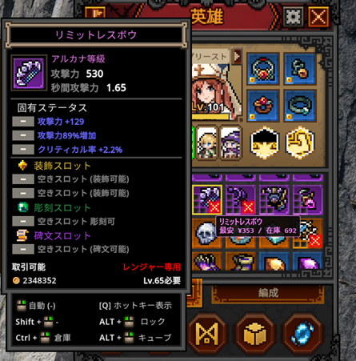

攻略Wiki 目次
0. ゲーム概要・2026年6月最新状況
タスクバーヒーロー（TBH: Task Bar Hero）は、Nugem Studio / Tesseract Studioが2026年5月27日にSteamでリリースした、タスクバーに収まる超小型の放置ハクスラRPGです。リリース直後から同時接続数が3万人を突破するなど大ヒットを記録し、2026年6月時点でも人気が続いています。
- 超コンパクトUI： デスクトップの隅やタスクバーで動作。作業しながら放置可能。
- 3ヒーロー編成： ルーンで最大3人まで編成。6クラス（無料3＋無料DLCプリースト＋有料ハンター/スレイヤー）。
- 500種以上のアイテム： コモンからコズミックまで10段階のレアリティ。
- 3アクト × 4難易度： 普通・悪夢・地獄・トーメントの4段階。
- Steamマーケット連携： レジェンダリー以上の装備をリアルマネーで取引可能（キューブLv10で解放）。
約2週間（6月8日〜）停止していたSteamマーケットへの新規出品が、サーバー移行による安定化を経てついに再開されました。同時接続数は50万人を突破し、今なお大人気が続いています。詳しい新仕様はマーケットの章で解説しています。
Ver 1.00.21 / マーケット再開の要点
- マーケット再開日時： 2026年6月25日。当初は16:00（KST）予定でしたが、事前作業のため+2時間延期され18:00（KST／日本時間も同じ18:00）に再開（10:00 BST／02:00 PDT）。
- 上位3グレードは出品一時制限： コズミック・ディバイン・セレスティアルは市場安定のため当面出品不可。安定確認後に段階的に解放予定。ソウルストーンは出品可能。
- 出品枠の制限： 1アカウントあたり出品枠4つ、新規出品の間隔は1枠あたり8時間ごとに変更。無制限出品による負荷問題への対策です。
- ホットフィックス： セキュリティ脆弱性の修正、ボット利用者へのハードウェアBAN強化、交易船ウィンドウがドラッグ中に動かせない不具合の修正、結果レベル範囲設定のエラー修正。
- 今後の予定： 市場が安定次第、コンテンツ開発ロードマップ・多言語対応のアナウンスを実施予定。
これまでの6月アップデート経緯
- 6月8日： サーバー過負荷・チート横行を受け、Steamマーケットへの新規出品を一時停止。
- 6月15日（Ver 1.00.12）： サーバー移行アップデート。主要なゲームデータ処理を開発元サーバーへ移行し、通常宝箱・ステージボス宝箱の最小獲得所要時間を短縮。所持中の宝箱はメールボックスへ移動。
- Ver 1.00.17： セキュリティ修正、異常なステージ変更のブロックを追加。
- Ver 1.00.20（6月23日）： マーケット再開スケジュールを告知。
- Ver 1.00.21（6月25日）： マーケット再開とホットフィックス。
その他のコミュニティ状況
- チート対策： チート検知システムにより2回以上の不正が確認された場合、Steamマーケットへの永久BAN。ゲームプレイ自体はBAN後も継続可能。
- 異常生成アイテムの削除： サーバー側の照合で、異常に生成されたと判断されたアイテムは削除対象に。
- 無料DLC： プリーストクラスはSteamストアページから無料で入手必須。
最初にやることチェックリスト
- Steamからインストール（Windows 10/11 64bit）。マーケット利用にはブロードバンド接続が必要。
- 無料プリーストDLCを入手してから初回起動。
- 設定で自動リトライをONにする（ステージ失敗時に自動再挑戦）。
- 最初のヒーローはナイト（安全）かレンジャー（高速周回）を選択。
- Lv3でルーン、Lv4でキューブが解放。錬金術でゴールドを貯め、ルーン解放を最優先。
1. 初心者向け序盤攻略（0〜10時間ロードマップ）
タスクバーヒーローの序盤で最も重要なのは「3人編成の早期解放」と「宝箱を効率よく回すこと」です。以下は2026年6月時点のコミュニティ検証に基づく、ゲーム開始から約10時間の最適ルートです。
最初の1〜3時間：インストール〜2人編成
- 初期クラスの選択： ナイト（耐久重視・初心者向け）かレンジャー（周回速度重視）で開始。プリーストは無料DLC入手後、2人目として編成に加えます。
- スキルは習得後に装備スロットへセット： スキルポイントを振っただけでは効果がありません。レベルアップのたびにスキル画面で装備することを忘れずに。
- 全スロットに装備を付ける： 武器・防具・アクセサリーすべて埋めるだけで火力・耐久が大幅アップします。
- ルーン「指揮のルーン」（1つ目）を解放： 約1,300ゴールドで2人目のヒーロー枠が開きます。すぐにプリーストを編成に加えましょう。
- キューブは錬金術モードで運用： Lv4で解放。不要装備は合成せず錬金術でゴールド化。序盤の金策の柱です。
- 壁に当たったらポータルで戻る： 右下の青いポータルアイコンで前のステージに戻り、装備とレベルを稼いでから再挑戦。
3〜10時間：3人編成とアクト1突破
- 150,000Gを貯めて3人目の枠を解放： ナイト＋プリースト＋レンジャーの鉄板編成が完成。これ以降の進行速度が劇的に上がります。
- 覚醒のルーンを解放： 全ヒーローのスキル装備枠が+1。プリーストの「力の祝福」など第2スキルが使えるようになり、火力が跳ね上がります。
- ぜんまいのルーンで宝箱自動開封： 放置プレイの効率が格段に向上。必ず早めに解放しましょう。
- ソウルストーン： アクトボス挑戦に必要。ボス撃破に成功した時のみ消費され、失敗しても消費されません。
- 各アクトは普通難易度をクリアしてから次へ： 難易度を急いで上げると装備不足で壁にぶつかります。普通をしっかりクリアしてから悪夢へ。
序盤でやってはいけないこと
- 白（コモン）装備を序盤で合成に使い切る（後のクラフト素材として必要）
- ルーン解放前に高額合成や装飾にゴールドを浪費する
- オフライン放置だけに頼る（宝箱が落ちないため装備が止まる）
- レベル差10以上の低レベルステージを長時間周回（経験値・ドロップペナルティ）
2. ルーン解放優先度・コスト一覧
ルーンツリーはゴールドで購入する永久強化です。一度解放すると取り消せないため、序盤のゴールドの使い道が攻略の分岐点になります。Lv3で解放されます。
ルーンツリーの方向と役割
| 方向 | 主な内容 | 優先度 |
|---|---|---|
| 南（下） | 指揮のルーン（編成枠）、覚醒のルーン（スキル枠） | 最優先 |
| 北東 | ぜんまいのルーン（自動開封）、探索のルーン（ドロップ率UP） | 高 |
| 北西 | 富のルーン（ゴールド獲得量UP） | 中 |
| 西 | 経験値・キューブ経験値UP | 中 |
| 東 | 保管のルーン（スタッシュ拡張） | 中〜高 |
重要ルーンの効果とコスト
| 優先度 | ルーン名（英語名） | 効果 | 目安コスト |
|---|---|---|---|
| 1 | 指揮のルーン (Rune of Command) | ヒーロー編成枠+1（2人目） | 約 1,300 G |
| 2 | 指揮のルーン (2つ目) | ヒーロー編成枠+1（3人目） | 累計 約 150,000 G |
| 3 | 覚醒のルーン (Rune of Awakening) | 全ヒーローのスキル装備枠+1 | 約 50,000 G |
| 4 | ぜんまいのルーン (Rune of the Mainspring) | 通常宝箱の自動開封 | 約 85,000 G |
| 5 | 安息のルーン (Rune of Repose) | オフライン報酬（ゴールド・経験値）の解放 | — |
| 6 | 解放のルーン (Rune of Opening) | 右クリックで宝箱一括開封 | — |
| 7 | 探索のルーン (Rune of Exploration) | 宝箱ドロップ率UP・ボス撃破ゴールドUP | — |
| — | 保管のルーン | スタッシュ（倉庫）1ページ追加 | 約 300,000 G |
※コストはルーンツリー上の累計目安です。パッチで変動する場合があります。
3. 宝箱システム完全攻略（最重要）
宝箱は装備・素材の最大の供給源です。TBHの進行速度は宝箱の管理術で大きく左右されます。2026年6月時点でもコミュニティで最も議論される攻略テーマの一つです。
宝箱の基本ルール
- ステージごとに宝箱レベルが決まっている： ステージの敵レベルに応じた装備が入ります。
- クールダウン（CD）あり： 同じレベル帯の宝箱にはドロップ後にCDが発生（白系約6分、青系約9分）。同じステージを長時間回すと効率が落ちます。
- インベントリ上限あり： 宝箱はインベントリに溜まります。満杯になるとドロップが止まるため、開封タイミングの管理が重要。
- アクトボスは確定ドロップ： 落ちない場合はメールを確認し、10秒待ってから更新ボタンを押してください。
宝箱ローテーション術（効率最大化）
- 白宝箱を自動開封OFFで溜める → インベントリが満杯になったら自動開封ONで一気に処理。
- 青宝箱狙いはステージをローテーション： 異なる宝箱レベルのステージを2〜3種類交互に周回し、個別CDを回避。報告ではドロップ数が約3倍に増えるケースも。
- ぜんまいのルーンで自動開封を解放して、放置中もドロップが回り続ける状態を維持。
- ドロップが止まったら別レベル帯のステージに切り替える。
ステージ別宝箱レベル表（主要ステージ）
| ステージ | 難易度 | 宝箱レベル | 用途 |
|---|---|---|---|
| 1-1 | 普通 | Lv1 | 序盤・白宝箱埋め |
| 1-4 | 普通 | Lv5 | 序盤周回 |
| 1-8 | 普通 | Lv10 | アクト1終盤 |
| 1-9 | 普通 | — | 経験値効率・ソウルストーン周回 |
| 2-3 | 普通 | Lv15 | 中盤入り |
| 2-8 | 普通 | Lv20 | 火炎耐性が必要な難所 |
| 3-6 | 普通 | — | 中盤の壁（火炎ダメージ対策必須） |
| 3-8 | 普通 | Lv30 | アクト3終盤 |
| 1-9 | 悪夢 | Lv40 | 高難易度入り |
| 3-5 | 悪夢 | Lv50 | 中〜終盤 |
| 2-5 | 地獄 | Lv65 | 終盤装備 |
| 1-3 | トーメント | Lv80 | エンドコンテンツ |
宝箱トラブル時の対処
- オプション → 「インベントリ問題解決」ボタンを試す
- ゲーム内メール（右上のメールアイコン）を確認 → 10秒待機 → 更新
- Steamインベントリに宝箱が滞留している場合は、メールから受け取る
4. オフライン vs AFK（背景プレイ）の違い
他の放置RPG経験者が最もハマりやすい罠がこれです。TBHでは「ゲームを閉じたオフライン」と「起動したままのAFK」は全く別物です。
| 状態 | ゴールド・経験値 | 宝箱ドロップ | おすすめ度 |
|---|---|---|---|
| AFK（ゲーム起動中） | ◎ 通常通り | ◎ 通常通り | 最推奨 |
| オフライン（Steam終了） | △ 安息のルーン解放後に一部獲得 | ✕ ゼロ | 補助的にのみ |
- 日中はPCで作業しながらゲームを起動したまま放置（20〜30分のアクティブセッションでも十分）
- ぜんまいのルーンで自動開封をONにし、自動リトライも設定
- 就寝前など長時間離れる時のみオフライン報酬を活用（装備は進まない点に注意）
- オフラインだけに頼ると装備・素材の進行が大きく遅れます
5. 全6クラス評価・最強パーティ編成
6クラス中、基本無料はナイト・レンジャー・ソーサラー。プリーストは無料DLC、ハンター・スレイヤーは有料DLC（各$3.99前後）です。クラスを解放してもヒーロー枠は増えません。枠はルーンの「指揮のルーン」でのみ増加します。
推奨パーティ編成（序盤〜中盤の鉄板）
ナイトが敵の攻撃を引き受け、プリーストが回復とパーティ火力バフ、レンジャーが高速DPSを担当。生存力と火力のバランスが最も優れた編成です。雑魚の多いステージではレンジャーの代わりにソーサラー（AoE）に入れ替えも有効。
| クラス | 役割 | 入手方法 | 序盤評価 |
|---|---|---|---|
| ナイト (Knight) | 前衛タンク | 無料 | S 初心者に最適 |
| プリースト (Priest) | 回復・バフ・サブタンク | 無料DLC | S 必須級 |
| レンジャー (Ranger) | 遠距離DPS・周回 | 無料 | S 周回最強 |
| ソーサラー (Sorcerer) | 範囲魔法DPS | 無料 | A 雑魚掃討 |
| ハンター (Hunter) | ボス特化DoT DPS | 有料DLC | A ボス戦向け |
| スレイヤー (Slayer) | 超高火力バーサーカー | 有料DLC | B 高難易度では脆い |
ナイト (Knight) — 不動のメインタンク
挑発と自己バフで前線を守る近接タンク。初心者が最初に選ぶクラスとして最も安全です。
- 長所： 高い防御力とヘイト集め。シールドチャージで敵の攻撃を引き付け、鉄壁の構えで被ダメージを大幅カット。
- 短所： ナイト＋プリーストの2タンク編成は周回速度が落ちる。
- 装備優先： 防御力、ブロック率、ダメージ軽減、全属性耐性。
プリースト (Priest) — 回復・バフの要
無料DLCで入手できる最重要クラス。高難易度では回復とバフなしでは進行が困難になります。
- 長所： ヒールによる持続回復、力の祝福（パーティ攻撃力+90%）、サンクチュアリ（範囲回復/無敵）。防御を積めばサブタンクも可能。
- 短所： 自身の攻撃力は低い。なぜか近接で戦うためHPも必要。
- 装備優先： HP、防御力、詠唱速度、クールダウン短縮。
レンジャー (Ranger) — 周回の王者
攻撃速度と貫通を活かした遠距離DPS。序盤〜中盤の周回効率は全クラス中トップクラスです。
- 長所： 連射・ピアシングアロー（貫通矢）による高回転ダメージ。後衛配置で安全に火力を出せる。
- 短所： 終盤は敵の防御力が上がり、貫通・装甲貫通ステータスが必須に。
- 装備優先： 攻撃速度 > 物理ダメージ > 貫通 > クリティカル。
ソーサラー (Sorcerer) — 範囲殲滅の魔法使い
- 長所： ファイアボール・メテオストライク等のAoEで雑魚密集ステージを高速クリア。経験値効率を上げたい時に編成へ。
- 短所： ボス単体戦ではDPSが落ちる。HP・防御が最低クラスのためタゲを取られると即死。
- 装備優先： 魔法攻撃力、詠唱速度、クールダウン短縮、全属性ダメージ。
ハンター (Hunter) — ボス特化DoTアタッカー
- 長所： 毒・出血のDoTでボスのHPを効率的に削る。エクスプロージョンボルトとクイックローダーのシナジーが強力。
- 短所： 雑魚の多いステージでは殲滅力不足。有料DLCが必要。
- 装備優先： クリティカル率、クリティカルダメージ、攻撃速度、火炎ダメージ。
スレイヤー (Slayer) — 諸刃の火力型
- 長所： ブラッドラスト発動時の火力は理論上全クラス最強。
- 短所： 防御力が紙のため高難易度（地獄・トーメント）ではプリーストの回復が追いつかず即死しやすい。
高難易度での装備方針
普通難易度まではバランス型でも問題ありませんが、悪夢以上では専門特化が必須です。DPSは攻撃速度・クリティカルに全振り、タンクは防御・HP・ダメージ軽減に全振り。中途半端なステータス配分は壁の原因になります。
6. クラス別スキルビルド推奨
スキルポイントは返還（リセット）可能ですが、序盤から方針を持って振ると後の振り直しが楽になります。スキルは習得後、必ず装備スロットにセットしてください。
レンジャー (Ranger)
- Lv1〜： 連射（Rapid Shot）をメインに。最初は攻撃速度よりフラットダメージを優先（攻撃速度ボーナスは%なので基礎火力が低いと効果薄）。
- 中盤： ピアシングアロー（貫通矢）を取得。単体に集中するスキルを優先（複数敵に分散するスキルは火力が割れる）。
- 第2スキル枠解放後： リセットして矢の雨（Rain of Arrows）に切り替え、クリティカル率を積む。
ナイト (Knight)
- 最初： 体力強化（Health Boost）に8ポイント → アクティブスキル1 → 攻撃力1。
- Lv10以降： 防御力強化（Armor Boost）を最優先。ナイトの防御が上がるほどパーティ全体の生存時間が延び、レンジャーのDPSが活きる。
プリースト (Priest)
- 最初： ヒール（Heal）に1ポイント → HP強化（プリーストは近接で殴られるため）。
- 第2スキル枠解放後： 力の祝福（Blessing of Strength）を最優先。パーティ全体の攻撃力+90%は破格のバフ。
ソーサラー (Sorcerer)
- ファイアボール系を軸に、雑魚掃討用のAoEスキルを優先。ボス戦用に単体火力スキルも確保。
7. アクト別攻略・経験値効率表
経験値効率の基本ルールは「現在のキャラレベル+6程度の敵を倒すのが最高効率」です。レベル差が10以上開くと経験値・ドロップにペナルティが発生します。
4つの難易度
| 難易度 | 英語名 | 特徴 |
|---|---|---|
| 普通 | Normal | 最初にクリアすべき難易度。各アクトを普通でクリアしてから次へ |
| 悪夢 | Nightmare | 敵のステータス上昇。属性対策が必要に |
| 地獄 | Hell | 大幅な数値インフレ。装備の専門特化が必須 |
| トーメント | Torment | エンドコンテンツ。最高レベルの宝箱とレア装備 |
各アクトのボスと攻略ポイント
- Act 1：忘却の森（適正Lv 1〜15）
- 難所： 1-8（毒スパイダー大量発生。回復が追いつかないと厳しい）
- ボス「オーク・チーフテン」： 物理攻撃のみ。ナイトのシールドで対応可能
- 推奨周回： 1-4（序盤）、1-9（経験値・ソウルストーン）
- Act 2：焦熱の荒野（適正Lv 15〜35）
- 難所： 2-8（炎の精霊。火炎耐性がないと全滅ループ）
- 対策： 防具にルビー（Ruby）を装飾して火炎耐性を確保
- 推奨周回： 2-4、2-9（中盤の金策・経験値の聖地）
- Act 3：虚無の深淵（適正Lv 35〜50+）
- 難所： 3-5以降（物理/魔法無効バリアを張る敵が出現。バランス編成が必要）
- 3-6「燃える峡谷」： 中盤最大の壁。火炎耐性（Minor Rubyアクセ推奨）＋ナイト＋プリースト＋レンジャーで突破
- ボス「ヴォイド・リーパー」： 即死攻撃あり。ペット「ゴースト」の即死回避が有効
- 推奨周回： 3-9（エンドコンテンツ入り口）
レベル帯別・効率周回表
| キャラLv | 周回ステージ | 目標 |
|---|---|---|
| Lv 1〜10 | 普通 1-4 / 1-9 | 周回200秒以内を維持。全スロット装備を更新 |
| Lv 11〜20 | 普通 2-4 | レア装備への移行。ルビー装飾の準備 |
| Lv 21〜30 | 普通 2-9 | レジェンダリー装備が落ち始める |
| Lv 31〜40 | 普通 3-4 | キューブクラフト武器が必須に |
| Lv 41〜50+ | 普通 3-9 / 悪夢以降 | イモータル・アルカナの厳選開始 |
8. Hero-dric Cube（8機能）完全解析
キューブはLv4で解放される中核システムです。デフォルトは合成モードですが、序盤は錬金術（Alchemy）に切り替えてゴールドを稼ぐのが定石。キューブレベルを上げると8つの機能が順次解放されます。
キューブの8機能一覧
| 機能 | 用途 | 解放タイミング |
|---|---|---|
| 錬金術 (Alchemy) | 不要アイテム → ゴールド | 序盤最優先で使用 |
| 合成 (Synthesis) | 同レアリティ9個 → 上位レアリティ | 中盤以降 |
| クラフト (Crafting) | 素材から装備を作成（部位指定可能） | キューブLv上昇で解放 |
| 装飾 (Decoration) | レア以上の装備に宝石をソケット | レア装備から |
| 刻印 (Engraving) | イモータル装備に刻印 | イモータル装備から |
| 铭文 (Inscription) | アルカナ装備に铭文 | アルカナ装備から |
| 除去 (Removal) | ソケットから宝石等を抽出（装備は外してから） | マーケット出品前に必須 |
| マーケット連携 | Steamマーケットへの出品 | キューブLv10 |
合成 (Synthesis) のルール
同じレアリティのアイテム9個を合成すると、上位レアリティに昇格するか、同レアリティの別アイテムが生成されます。合成レベルが低いと失敗時にレベルダウンする場合があるため、高レベル装備の合成前にキューブレベルを上げましょう。
- コモン9個 → アンコモン
- アンコモン9個 → レア
- レア9個 → 一定確率でレジェンダリー
- レジェンダリー9個 → 一定確率でイモータル
※合成前に Alt + 左クリック でアイテムをロック。錬金術の自動入力でも誤消費を防げます。
クラフトと錬金術の使い分け
- 序盤： 錬金術でゴールド化 → ルーン解放に充てる
- 中盤： クラフトで部位指定の装備を作成。赤の粉（攻撃）、青の粉（魔法）、緑の粉（防御）を使用
- 白（コモン）素材は温存： 序盤で合成に使い切らない。後のクラフト・合成に必要
レアリティとソケット段階
| レアリティ | ソケット | 用途 |
|---|---|---|
| コモン | — | 錬金術・合成素材 |
| アンコモン | — | 序盤装備更新 |
| レア | 装飾 (Decoration) | 宝石ソケット解放 |
| レジェンダリー | — | ビルドの核。マーケット取引可能 |
| イモータル | 刻印 (Engraving) | エンドゲーム装備 |
| アルカナ | 铭文 (Inscription) | マーケット需要大 |
| ビヨンド / セレスティアル / ディバイン / コズミック | — | 終盤チェイスレアリティ |
宝石（装飾）効果一覧
| 宝石 | 武器 | 防具 |
|---|---|---|
| ルビー (Ruby) | 火炎ダメージ追加 | 火炎耐性（Act2-8・3-6で必須） |
| サファイア (Sapphire) | 冷気ダメージ（スロウ） | 冷気耐性 |
| トパーズ (Topaz) | 雷ダメージ | 雷耐性 |
| エメラルド (Emerald) | クリティカルダメージ増 | 毒耐性 |
| ダイヤモンド (Diamond) | 全属性ダメージ増 | 全属性耐性 |
※宝石の除去は可能ですが、はめ込んだ宝石は破壊されます。マーケット出品前にRemoval機能で外しましょう。
9. ペット図鑑・ドロップ場所
ペットは所持または装備するだけでパーティ全体にパッシブ効果を付与します。ドロップ率は非常に低く（0.01%〜0.05%程度）、長期間の放置周回が必要です。サポーターパックDLCにはペット関連のボーナスも含まれます。
| ペット名 | 主なドロップ場所 | 効果・特徴 |
|---|---|---|
| コウモリ (Bat) | Act 1-8 付近 | 移動速度+10%、HP吸収2%。最序盤の生命線 |
| 巨大ハエ (Giant Fly) | Act 2-4 付近 | 攻撃速度+15%。レンジャー・ハンターと相性抜群 |
| 炎の精霊 (Fire Spirit) | Act 2-8 付近 | 火炎ダメージ+20%、火炎耐性+30% |
| ブルーゴーレム (Blue Golem) | Act 3 序盤 | 防御力+40%、最大HP+20%。ナイトに最適 |
| 地獄のゴーレム (Hell Golem) | 地獄難易度以降 | 全属性耐性+50%、被ダメージ30%反射 |
| ゴースト (Ghost) | Act 3-9 等 | 回避率+20%、即死回避（CD:60秒）。Act3ボス対策 |
| ドラゴン (Dragon) | トーメント限定 | 全ステータス+50%、画面全体にブレスダメージ |
10. Steamマーケット活用法
本作の大きな特徴が、Steamコミュニティマーケットを通じたアイテムの売買です。放置で拾ったレア装備がSteamウォレット残高に変わります。ただしSteam Guard（モバイル認証）の設定が必須です。
6月8日から停止していたマーケットへの新規出品が再開されました。ただしサーバー安定化のため、以下の新しい出品ルールが適用されています。
マーケット再開後の新ルール（最重要）
| 項目 | 新仕様 |
|---|---|
| 出品枠 | 1アカウントあたり4枠まで |
| 新規出品間隔 | 1枠あたり8時間ごと |
| 出品制限グレード | コズミック・ディバイン・セレスティアルは当面出品不可（段階的に解放予定） |
| ソウルストーン | 引き続き出品可能 |
| マーケット解放条件 | キューブLv10以上 |
マーケットの基本操作
- ゲーム内ゴールド： キューブ → 錬金術 (Alchemy)
- リアルマネー取引： 左上の交易船アイコン（SteamTradeShip）から。キューブLv10で解放
- 出品手順： 交易船アイコンをクリック → アイテムをドラッグでSteamインベントリへ → Steamマーケットで出品
- 購入後の受取： マーケットで購入したアイテムはゲーム内メールに届きます。10秒待ってから更新ボタンを押して受け取り
- 出品前： ソケットに宝石等が付いている場合はキューブのRemoval機能で除去
マーケット活用のコツ
- 限られた4枠を有効活用： 出品枠は4つ・8時間間隔のため、最も高く売れる厳選品から優先して出品する
- 欲しい装備がドロップしない時： 不要なレジェンダリーを売却し、必要な装備を購入する方が効率的
- 出品価格： 直近の成約価格を確認してから設定。桁間違いに注意（取り消し不可）
- 需要が高いアイテム： クールダウン短縮・詠唱速度付きソーサラー杖、ナイト用HP%重鎧、火炎耐性ルビー付き防具、固有ステータス付きのレジェンダリー〜アルカナ装備
- 序盤のブースト： マーケットで安価なレジェンダリー武器を購入 → 錬金術でゴールドに変換 → ルーン解放を加速（通称：課金ブースト）
※マーケットの売買は絶対に取り消し不可です。出品時は価格を指差し確認してください。なお、チート検知で2回以上の不正が確認されるとマーケット永久BANの対象になります（ゲームプレイ自体は継続可能）。
🛠 便利ツール：TBH Market Overlay（価格表示ツール）
マーケットでの売買を効率化するなら、アイテムの相場をその場で確認できることが何より重要です。ここでは当Wiki管理人が制作した非公式オーバーレイツール「TBH Market Overlay」を紹介します。インベントリでアイテムにマウスを乗せるだけで、Steamマーケットの最安値と在庫数を画面上に重ねて表示します。

TBH Market Overlay とは
Task Bar Heroをプレイ中、アイテムにカーソルを合わせるだけで、そのアイテムのSteamマーケット最安値と出品在庫数を画面に重ねて表示する非公式オーバーレイツールです。いちいちブラウザでマーケットを開いて確認する手間がなくなり、売買やレアリティの判断がその場で完結します。
主な特徴
- マウスオーバーするだけ： アイテムの最安値と在庫を即表示
- レアリティ対応： 等級ごとに正しい価格を判定
- 多言語対応： 日本語/英語を切り替え可能（価格は円・USD表示）
- インストール不要： exeをダブルクリックするだけ（Python等は不要）
- 軽量・非侵襲： ゲームの動作を妨げません
使い方（かんたん3ステップ）
- exe をダブルクリックして起動
- 初回だけ自動でデータを準備（数分）
- ゲームでアイテムにカーソルを合わせると価格が表示されます
※価格は「価格を更新」ボタンでいつでも最新にできます。うまく動作しない場合は、ゲーム内言語を英語に設定してください（OCR認識の都合）。
動作要件
- Windows 10 / 11（64bit）
- Task Bar Hero がインストール済み
- インターネット接続（価格取得のため）
- Windowsの OCR 言語パック（使用言語のもの）
※本ツールは非公式のファンメイドであり、開発元・Valveとは無関係です。表示価格はSteamマーケットの参考値であり、実際の取引価格を保証しません。ご利用は自己責任で、ゲームのEULA／Steam利用規約を必ずご確認ください。
11. 設定・ショートカット・トラブル対処
公式ショートカットキー
| キー | 効果 |
|---|---|
| Shift + F12 | ウィンドウ位置をリセット（画面外に消えた時に最優先で試す） |
| Shift + F11 | ウィンドウスケールをリセット（DPI変更後に小さくなった時） |
| Alt + 左クリック | アイテムをロック（錬金術・合成の誤消費防止） |
推奨ゲーム設定
- 自動リトライ： ON（ステージ失敗時に自動で再挑戦）
- 宝箱自動開封： ぜんまいのルーン解放後にON
- マルチモニター環境： モニター移動後はShift+F12 → Shift+F11の順で試す
よくあるトラブルと対処法
黒い画面が出てゲームが進行しない
Steamライブラリ → TBH右クリック → 管理 → ローカルファイルを閲覧 → TaskBarHero.exe 右クリック → プロパティ → 互換性タブ → 「全画面表示の最適化を無効にする」にチェック。さらに高DPI設定で「アプリケーション」を選択。
ウィンドウが画面外に行った
Shift + F12 で位置リセット。効かない場合は Shift + F11 でスケールもリセット。
宝箱が落ちない・開けない
①レベル差ペナルティ（キャラLv+6程度のステージか確認）②メール確認→10秒待機→更新 ③オプション→「インベントリ問題解決」④インベントリが満杯でないか確認
スキルが効かない
スキルを習得した後、装備スロットにセットしていますか？ 習得だけでは発動しません。
マーケットで買った装備が見つからない
ゲーム内メール（右上のメールアイコン）を確認。10秒待ってから更新ボタンを押してください。
12. よくある質問（FAQ）
取り返しのつかない要素
- キューブの錬金術での誤消費（ロック忘れによる装備ロスト）
- 装飾で使った宝石の消滅（除去しても宝石は戻らない）
- Steamマーケットでの売買（キャンセル不可）
- ルーンの解放（ゴールドの振り直し不可）
逆にスキルポイントは返還ボタンでいつでも無料リセット可能です。DLCクラスの出現もSteamのプロパティからオン/オフ切り替え可能。
Q. ナイトとレンジャー、どちらで始めるべき？
A. ナイトは耐久重視で安全、レンジャーは周回速度重視。どちらでも問題ありませんが、2人目にプリーストを入れるのが鉄板です。
Q. ハンターを買ったのに3人出撃できない
A. DLCはクラスを解放するだけで、ヒーロー枠は増えません。ルーンツリーの「指揮のルーン」で枠を増やし、編成画面でハンターを配置してください。
Q. ソウルストーンは失敗すると消える？
A. いいえ。アクトボスの撃破に成功した時のみ消費されます。何度でも挑戦可能です。
Q. オフライン放置で宝箱は落ちる？
A. 落ちません。Steamを閉じた状態では宝箱ドロップはゼロです。ゴールド・経験値のみ安息のルーン解放後に一部獲得できます。
Q. 序盤で白装備を合成すべき？
A. 基本的にNo。ゴールドが必要なら錬金術で売却し、白素材は後のクラフト用に温存しましょう。
Q. プリーストDLCは本当に無料？
A. はい。SteamストアのDLCタブから「TBH: Task Bar Hero — Priest (Class)」を$0.00で入手してください。初回プレイ前に必ず追加しましょう。
Q. 合成でレベル10の装備がレベル5になった
A. キューブの合成レベルが低いと失敗時にダウングレードします。高レベル装備を合成する前にキューブレベルを上げましょう。
Q. マーケットはもう使える？（2026年6月25日時点）
A. はい。6月8日から停止していた新規出品が、Ver 1.00.21（6月25日18:00 KST）で再開されました。ただし出品枠4つ・1枠あたり8時間間隔の制限があり、コズミック・ディバイン・セレスティアルの上位3グレードは当面出品不可です（ソウルストーンは出品可能）。キューブLv10以上で利用できます。
Q. 上位グレード（コズミック等）はいつ売れるようになる？
A. 市場の安定が確認でき次第、段階的に解放され、具体的なスケジュールは別途アナウンスされる予定です。あわせてコンテンツ開発ロードマップや多言語対応の告知も予定されています。
Strategy Wiki — Table of Contents
- 0. Game Overview & Latest Status (June 2026)
- 1. Beginner Guide (0–10 Hour Roadmap)
- 2. Rune Unlock Priority & Costs
- 3. Chest System Guide (Most Important)
- 4. Offline vs AFK (background play)
- 5. All 6 Classes & Best Party Comp
- 6. Recommended Skill Builds by Class
- 7. Act Guide & XP Efficiency
- 8. Hero-dric Cube (8 functions)
- 9. Pet Index & Drop Locations
- 10. Steam Market Guide
- ★ Handy Tool: TBH Market Overlay (price display)
- 11. Settings, Shortcuts & Troubleshooting
- 12. Frequently Asked Questions (FAQ)
0. Game Overview & Latest Status (June 2026)
TBH: Task Bar Hero is an ultra-compact idle hack-and-slash RPG that fits in your Windows taskbar, released on Steam on May 27, 2026 by Nugem Studio / Tesseract Studio. It became a massive hit right after launch, surpassing tens of thousands of concurrent players, and remains hugely popular as of June 2026.
- Ultra-compact UI: Runs in the corner of your desktop or in the taskbar. Idle while you work.
- 3-hero party: Up to 3 heroes via Runes. 6 classes (3 free + free Priest DLC + paid Hunter/Slayer).
- 500+ items: 10 rarity tiers from Common to Cosmic.
- 3 Acts × 4 difficulties: Normal, Nightmare, Hell, and Torment.
- Steam Market integration: Trade Legendary+ gear for real money (unlocked at Cube Lv10).
After about two weeks of suspension (since June 8), new listings on the Steam Market have finally reopened following a server migration that stabilized the game. Concurrent players have surpassed 500,000, and the game remains a huge hit. See the Market chapter for the new rules.
Ver 1.00.21 / Market Reopening Highlights
- Reopening time: June 25, 2026. Originally scheduled for 16:00 KST, it was delayed +2 hours to 18:00 KST due to preparation work (10:00 BST / 02:00 PDT).
- Top 3 grades temporarily restricted: Cosmic, Divine, and Celestial cannot be listed for now to ensure market stability. They will be unlocked gradually. Soulstones can still be listed.
- Listing limits: 4 listing slots per account, with a new listing interval of 8 hours per slot. This addresses the load issues caused by previously unlimited listings.
- Hotfix: Patched a security vulnerability, strengthened hardware bans for bot users, fixed the Trade Ship window being unmovable while dragging, and fixed a result level-range setting error.
- Upcoming: Once the market stabilizes, a content development roadmap and multilingual announcements are planned.
June Update Timeline So Far
- June 8: New Steam Market listings were temporarily suspended due to server overload and rampant cheating.
- June 15 (Ver 1.00.12): Server migration update. Key game data processing moved to the developer's own server, and the minimum acquisition time for normal & stage-boss chests was shortened. Owned chests were moved to the Mailbox.
- Ver 1.00.17: Security fix and blocking of abnormal stage changes.
- Ver 1.00.20 (June 23): Announced the market reopening schedule.
- Ver 1.00.21 (June 25): Market reopening and hotfix.
Other Community Notes
- Anti-cheat: If cheating is confirmed twice or more, the account receives a permanent Steam Market ban. Gameplay itself can continue after the ban.
- Abnormal item cleanup: Items deemed abnormally generated may be deleted during server-side validation.
- Free DLC: The Priest class must be claimed free from the Steam store page.
First Things To Do — Checklist
- Install from Steam (Windows 10/11 64-bit). Broadband is required for market features.
- Claim the free Priest DLC before your first launch.
- Turn on Auto-retry in settings (auto re-attempt on stage failure).
- Pick Knight (safe) or Ranger (fast farming) as your first hero.
- Runes unlock at Lv3, Cube at Lv4. Save gold via Alchemy and prioritize Runes.
1. Beginner Guide (0–10 Hour Roadmap)
The two most important things early in Task Bar Hero are "unlocking the 3-hero party as soon as possible" and "farming chests efficiently." Below is the optimal route for the first ~10 hours, based on community testing as of June 2026.
First 1–3 Hours: Install to 2-Hero Party
- Pick your starting class: Start with Knight (tanky, beginner-friendly) or Ranger (fast farming). Add the Priest as your second hero after claiming the free DLC.
- Equip skills after learning them: Spending skill points alone does nothing — set them in a skill slot each time you level up.
- Fill every equipment slot: Just filling weapon, armor, and accessory slots greatly boosts damage and durability.
- Unlock the first "Rune of Command": About 1,300 gold opens the second hero slot. Add the Priest right away.
- Run the Cube in Alchemy mode: Unlocks at Lv4. Convert unwanted gear to gold via Alchemy instead of synthesis — your main early income.
- Hit a wall? Use the portal: The blue portal icon (bottom-right) sends you back to earlier stages to farm gear and levels.
3–10 Hours: 3-Hero Party & Clearing Act 1
- Save 150,000G for the third slot: Completes the staple Knight + Priest + Ranger comp. Progress speeds up dramatically afterward.
- Unlock the Rune of Awakening: +1 skill slot for all heroes. Enables second skills like the Priest's "Blessing of Strength" for a big damage spike.
- Rune of the Mainspring for auto-open chests: Greatly improves idle efficiency. Unlock it early.
- Soul Stones: Needed to challenge Act bosses. Consumed only on a successful clear — failed attempts cost nothing.
- Clear each Act on Normal before moving up: Rushing difficulty leads to gear walls. Clear Normal thoroughly before Nightmare.
What NOT To Do Early
- Burning through White (Common) gear in synthesis early (needed later as crafting material)
- Wasting gold on expensive synthesis or decoration before unlocking Runes
- Relying only on offline play (no chests drop, so gear stalls)
- Farming low-level stages with a 10+ level gap for too long (XP/drop penalty)
2. Rune Unlock Priority & Costs
The Rune tree is a permanent upgrade you buy with gold. Unlocks can't be undone, so how you spend early gold is a key turning point. It unlocks at Lv3.
Rune Tree Directions & Roles
| Direction | Main content | Priority |
|---|---|---|
| South (down) | Rune of Command (party slots), Rune of Awakening (skill slots) | Top |
| Northeast | Rune of the Mainspring (auto-open), Rune of Exploration (drop rate up) | High |
| Northwest | Rune of Wealth (gold gain up) | Mid |
| West | XP / Cube XP up | Mid |
| East | Rune of Storage (stash expansion) | Mid–High |
Key Rune Effects & Costs
| Priority | Rune Name | Effect | Approx. cost |
|---|---|---|---|
| 1 | Rune of Command | +1 hero slot (2nd hero) | ~1,300 G |
| 2 | Rune of Command (2nd) | +1 hero slot (3rd hero) | ~150,000 G total |
| 3 | Rune of Awakening | +1 skill slot for all heroes | ~50,000 G |
| 4 | Rune of the Mainspring | Auto-open normal chests | ~85,000 G |
| 5 | Rune of Repose | Unlocks offline rewards (gold/XP) | — |
| 6 | Rune of Opening | Right-click to bulk-open chests | — |
| 7 | Rune of Exploration | Chest drop rate up, boss gold up | — |
| — | Rune of Storage | +1 stash page | ~300,000 G |
*Costs are cumulative estimates on the Rune tree and may change with patches.
3. Chest System Guide (Most Important)
Chests are the biggest source of gear and materials. Your progression speed in TBH is largely determined by how you manage chests — one of the most discussed strategy topics in the community even as of June 2026.
Chest Basics
- Each stage has a fixed chest level: The gear inside scales to the stage's enemy level.
- Cooldown (CD): After a chest of a given level drops, it enters a CD (~6 min for white, ~9 min for blue). Farming one stage too long lowers efficiency.
- Inventory cap: Chests pile up in your inventory. Once full, drops stop — managing when to open is key.
- Act bosses always drop chests: If you don't get one, check Mailbox, wait 10 seconds, then hit refresh.
Chest Rotation Technique (Max Efficiency)
- Stockpile white chests with auto-open OFF → turn auto-open ON to process them all once inventory fills.
- For blue chests, rotate stages: Alternate between 2–3 stages of different chest levels to avoid individual CDs. Some reports show ~3× more drops.
- Unlock auto-open via the Rune of the Mainspring so drops keep flowing while idle.
- When drops stall, switch to a different level tier of stage.
Chest Level by Stage (Main Stages)
| Stage | Difficulty | Chest Lv | Use |
|---|---|---|---|
| 1-1 | Normal | Lv1 | Early / white chest stockpile |
| 1-4 | Normal | Lv5 | Early farming |
| 1-8 | Normal | Lv10 | Late Act 1 |
| 1-9 | Normal | — | XP efficiency / Soul Stone farming |
| 2-3 | Normal | Lv15 | Entering mid-game |
| 2-8 | Normal | Lv20 | Hard spot needing fire resist |
| 3-6 | Normal | — | Mid-game wall (fire damage counters needed) |
| 3-8 | Normal | Lv30 | Late Act 3 |
| 1-9 | Nightmare | Lv40 | Entering high difficulty |
| 3-5 | Nightmare | Lv50 | Mid–late |
| 2-5 | Hell | Lv65 | Endgame gear |
| 1-3 | Torment | Lv80 | Endgame content |
Chest Troubleshooting
- Try Options → "Resolve Inventory Issue" button
- Check in-game Mail (top-right mail icon) → wait 10s → refresh
- If chests are stuck in the Steam inventory, claim them from the Mailbox
4. Offline vs AFK (Background Play)
This is the biggest trap for players coming from other idle RPGs. In TBH, "offline with the game closed" and "AFK with the game running" are completely different.
| State | Gold / XP | Chest drops | Recommendation |
|---|---|---|---|
| AFK (game running) | ◎ Normal | ◎ Normal | Best |
| Offline (Steam closed) | △ Partial after Rune of Repose | ✕ Zero | Supplementary only |
- Leave the game running while working on your PC during the day (even 20–30 min active sessions help)
- Turn on auto-open via the Rune of the Mainspring, and set Auto-retry
- Use offline rewards only for long breaks like sleep (note: gear doesn't progress)
- Relying only on offline will greatly slow gear and material progression
5. All 6 Classes & Best Party Comp
Of the 6 classes, Knight, Ranger, and Sorcerer are free. Priest is free DLC, and Hunter/Slayer are paid DLC (about $3.99 each). Unlocking a class does not add a hero slot — slots only increase via the "Rune of Command."
Recommended Party Comp (Early–Mid Staple)
The Knight soaks hits, the Priest heals and buffs party damage, and the Ranger deals fast DPS. The best balance of survivability and damage. On dense stages, swapping the Ranger for a Sorcerer (AoE) also works.
| Class | Role | Access | Early rating |
|---|---|---|---|
| Knight | Frontline tank | Free | S Best for beginners |
| Priest | Heal / buff / sub-tank | Free DLC | S Essential |
| Ranger | Ranged DPS / farming | Free | S Best farmer |
| Sorcerer | AoE magic DPS | Free | A Clearing mobs |
| Hunter | Boss-focused DoT DPS | Paid DLC | A Boss fights |
| Slayer | High-burst berserker | Paid DLC | B Fragile at high difficulty |
Knight — Steadfast Main Tank
A melee tank that holds the front with taunts and self-buffs. The safest first pick for beginners.
- Pros: High armor and threat generation. Shield Charge pulls aggro; Iron Stance heavily cuts incoming damage.
- Cons: A Knight + Priest double-tank comp slows farming speed.
- Gear priority: Armor, block rate, damage reduction, all-element resistance.
Priest — Heal & Buff Core
The most important class, available as free DLC. At high difficulty, progress is nearly impossible without heals and buffs.
- Pros: Sustained healing, Blessing of Strength (+90% party attack), Sanctuary (AoE heal/invuln). Can sub-tank if built defensively.
- Cons: Low personal damage. Oddly fights in melee, so it needs HP.
- Gear priority: HP, armor, cast speed, cooldown reduction.
Ranger — King of Farming
A ranged DPS built around attack speed and piercing. Top-tier farming efficiency in the early-to-mid game.
- Pros: High-rate damage via Rapid Shot and Piercing Arrow. Deals damage safely from the backline.
- Cons: Late game enemy armor rises, making penetration/armor-pierce stats essential.
- Gear priority: Attack speed > physical damage > penetration > crit.
Sorcerer — AoE Wipe Mage
- Pros: Clears dense mob stages fast with AoE like Fireball/Meteor Strike. Add it when you want XP efficiency.
- Cons: Weak single-target DPS on bosses. Lowest HP/armor — melts if it pulls aggro.
- Gear priority: Magic power, cast speed, cooldown reduction, all-element damage.
Hunter — Boss-Focused DoT DPS
- Pros: Whittles boss HP efficiently with poison/bleed DoT. Strong synergy between Explosion Bolt and Quick Loader.
- Cons: Weak clear on mob-heavy stages. Requires paid DLC.
- Gear priority: Crit rate, crit damage, attack speed, fire damage.
Slayer — Double-Edged Damage Dealer
- Pros: Theoretically the highest damage of any class while Bloodlust is active.
- Cons: Paper-thin defense — at high difficulty (Hell/Torment) the Priest's heals can't keep up, leading to quick deaths.
Gear Policy at High Difficulty
A balanced loadout is fine up to Normal, but specialization is mandatory at Nightmare and above. DPS should go all-in on attack speed/crit; tanks on armor/HP/damage reduction. Half-measure stat spreads cause walls.
6. Recommended Skill Builds by Class
Skill points can be refunded (reset), but having a plan early makes respeccing easier later. Always set learned skills into a slot.
Ranger
- Lv1+: Make Rapid Shot your main. At first prioritize flat damage over attack speed (% bonuses are weak when base damage is low).
- Mid: Take Piercing Arrow. Prefer single-target focused skills (multi-target splits your damage).
- After 2nd skill slot: Reset and pivot to Rain of Arrows, then stack crit rate.
Knight
- First: 8 points into Health Boost → 1 into an active skill → 1 into Attack Damage.
- Lv10+: Prioritize Armor Boost. The more armor the Knight has, the longer the whole party survives, which lets the Ranger work.
Priest
- First: 1 point into Heal → invest in HP (the Priest takes melee hits).
- After 2nd skill slot: Prioritize Blessing of Strength. +90% party attack is an exceptional buff.
Sorcerer
- Center your build on Fireball-line AoE for clearing mobs. Keep a single-target skill for boss fights.
7. Act Guide & XP Efficiency
The core XP rule is "killing enemies around your character level +6 is most efficient." A level gap of 10+ triggers an XP/drop penalty.
The 4 Difficulties
| Difficulty | Name | Notes |
|---|---|---|
| Normal | Normal | Clear first. Clear each Act on Normal before moving up |
| Nightmare | Nightmare | Enemy stats rise. Elemental counters needed |
| Hell | Hell | Major stat inflation. Gear specialization required |
| Torment | Torment | Endgame. Highest-level chests and rare gear |
Act Bosses & Strategy Points
- Act 1: Forest of Oblivion (recommended Lv 1–15)
- Hard spot: 1-8 (swarms of poison spiders; tough if healing can't keep up)
- Boss "Orc Chieftain": Physical attacks only. Manageable with the Knight's shield
- Recommended farming: 1-4 (early), 1-9 (XP / Soul Stones)
- Act 2: Scorched Wastes (recommended Lv 15–35)
- Hard spot: 2-8 (Fire Spirits; a wipe loop without fire resist)
- Counter: Socket Ruby into armor for fire resistance
- Recommended farming: 2-4, 2-9 (mid-game gold/XP hotspot)
- Act 3: Abyss of the Void (recommended Lv 35–50+)
- Hard spot: 3-5 onward (enemies with physical/magic-immune barriers; balanced comp needed)
- 3-6 "Burning Canyon": The biggest mid-game wall. Beat it with fire resist (Minor Ruby accessory) + Knight + Priest + Ranger
- Boss "Void Reaper": Has an instant-kill attack. The pet "Ghost" (death dodge) helps
- Recommended farming: 3-9 (gateway to endgame)
Efficient Farming by Level Band
| Char Lv | Farm stage | Goal |
|---|---|---|
| Lv 1–10 | Normal 1-4 / 1-9 | Keep clears under 200s. Update all gear slots |
| Lv 11–20 | Normal 2-4 | Transition to Rare gear. Prep Ruby decorations |
| Lv 21–30 | Normal 2-9 | Legendary gear starts dropping |
| Lv 31–40 | Normal 3-4 | Cube-crafted weapons become essential |
| Lv 41–50+ | Normal 3-9 / Nightmare+ | Start hunting Immortal/Arcana rolls |
8. Hero-dric Cube (8 Functions)
The Cube is a core system unlocked at Lv4. It defaults to Synthesis mode, but early on the standard play is to switch to Alchemy to earn gold. Raising the Cube level unlocks 8 functions in order.
The Cube's 8 Functions
| Function | Use | Unlock timing |
|---|---|---|
| Alchemy | Unwanted items → gold | Top early priority |
| Synthesis | 9 same-rarity → higher rarity | Mid-game on |
| Crafting | Make gear from materials (slot-targetable) | Unlocks as Cube levels up |
| Decoration | Socket gems into Rare+ gear | From Rare gear |
| Engraving | Engrave Immortal gear | From Immortal gear |
| Inscription | Inscribe Arcana gear | From Arcana gear |
| Removal | Extract gems from sockets (unequip first) | Required before market listing |
| Market link | List on the Steam Market | Cube Lv10 |
Synthesis Rules
Synthesizing 9 items of the same rarity either upgrades to the next rarity or produces another item of the same rarity. A low synthesis level can downgrade on failure, so raise the Cube level before synthesizing high-level gear.
- 9 Common → Uncommon
- 9 Uncommon → Rare
- 9 Rare → chance for Legendary
- 9 Legendary → chance for Immortal
*Lock items first with Alt + Left Click. Alchemy auto-fill also prevents accidental loss.
Crafting vs Alchemy
- Early: Convert to gold via Alchemy → fund Rune unlocks
- Mid: Craft slot-targeted gear using Red Powder (attack), Blue Powder (magic), Green Powder (defense)
- Preserve White (Common) materials: Don't burn them early — needed for later crafting/synthesis
Rarity & Socket Tiers
| Rarity | Socket | Use |
|---|---|---|
| Common | — | Alchemy / synthesis material |
| Uncommon | — | Early gear updates |
| Rare | Decoration | Unlocks gem sockets |
| Legendary | — | Build core. Tradable on the market |
| Immortal | Engraving | Endgame gear |
| Arcana | Inscription | High market demand |
| Beyond / Celestial / Divine / Cosmic | — | Endgame chase rarities |
Gem (Decoration) Effects
| Gem | Weapon | Armor |
|---|---|---|
| Ruby | Adds fire damage | Fire resist (essential for 2-8 / 3-6) |
| Sapphire | Cold damage (slow) | Cold resist |
| Topaz | Lightning damage | Lightning resist |
| Emerald | Increases crit damage | Poison resist |
| Diamond | Increases all-element damage | All-element resist |
*Gems can be removed, but a socketed gem is destroyed in the process. Use Removal before listing on the market.
9. Pet Index & Drop Locations
Pets grant party-wide passive effects just by being owned or equipped. Drop rates are very low (about 0.01%–0.05%), requiring long idle farming. The Supporter Pack DLC also includes pet-related bonuses.
| Pet | Main drop location | Effect / notes |
|---|---|---|
| Bat | Around Act 1-8 | Move speed +10%, HP leech 2%. Early lifeline |
| Giant Fly | Around Act 2-4 | Attack speed +15%. Great with Ranger/Hunter |
| Fire Spirit | Around Act 2-8 | Fire damage +20%, fire resist +30% |
| Blue Golem | Early Act 3 | Armor +40%, max HP +20%. Best on the Knight |
| Hell Golem | Hell difficulty+ | All-element resist +50%, reflects 30% damage |
| Ghost | Act 3-9, etc. | Dodge +20%, death dodge (60s CD). Counters the Act 3 boss |
| Dragon | Torment only | All stats +50%, screen-wide breath damage |
10. Steam Market Guide
A major feature of this game is buying/selling items via the Steam Community Market. Rare gear you pick up while idle turns into Steam Wallet funds. Note that Steam Guard (mobile authentication) is required.
New listings, suspended since June 8, have reopened. However, the following new listing rules apply for server stability.
New Post-Reopening Rules (Most Important)
| Item | New rule |
|---|---|
| Listing slots | Up to 4 slots per account |
| New listing interval | 8 hours per slot |
| Restricted grades | Cosmic, Divine, Celestial can't be listed for now (gradual unlock planned) |
| Soulstones | Still listable |
| Market requirement | Cube Lv10+ |
Market Basics
- In-game gold: Cube → Alchemy
- Real-money trading: Via the Trade Ship icon (SteamTradeShip), top-left. Unlocks at Cube Lv10
- How to list: Click the Trade Ship icon → drag items to your Steam inventory → list on the Steam Market
- Receiving purchases: Bought items arrive in the in-game Mail. Wait 10s, then hit refresh to claim
- Before listing: If gems are socketed, remove them with the Cube's Removal function
Market Tips
- Use your 4 slots wisely: With 4 slots / 8-hour intervals, list your most valuable rolls first
- When the gear you want won't drop: Sell spare Legendaries and buy the piece you need
- Pricing: Check recent sale prices before setting a price. Watch for digit errors (no cancellation)
- High-demand items: Sorcerer staves with cooldown reduction / cast speed, Knight HP% heavy armor, Ruby-socketed fire-resist armor, Legendary–Arcana gear with unique stats
- Early boost: Buy a cheap Legendary weapon on the market → convert to gold via Alchemy → accelerate Rune unlocks (a.k.a. "paid boost")
*Market trades are absolutely non-cancellable. Double-check prices when listing. Also, confirmed cheating twice or more results in a permanent market ban (gameplay itself can continue).
🛠 Handy Tool: TBH Market Overlay (Price Display)
To trade efficiently on the market, nothing matters more than being able to check item prices on the spot. Here we introduce an unofficial overlay tool made by this wiki's admin: TBH Market Overlay. Just hover over an item in your inventory and it overlays the Steam Market's lowest price and listing stock right on your screen.
Just double-click the exe to run. No Python or other installs required. Completely free to use.
What is TBH Market Overlay?
An unofficial overlay tool that, while you play Task Bar Hero, shows an item's Steam Market lowest price and listing stock on screen just by hovering over it. No more opening a browser to check the market — you can judge trades and rarity right away.
Key Features
- Just hover: Instantly shows the item's lowest price and stock
- Rarity-aware: Correctly identifies the price per grade
- Multilingual: Switch between Japanese/English (prices in JPY / USD)
- No install: Just double-click the exe (no Python, etc.)
- Lightweight & non-intrusive: Doesn't interfere with the game
How to Use (3 Easy Steps)
- Double-click the exe to launch
- It auto-prepares data on first run (a few minutes)
- Hover over an item in-game to see its price
*Prices can be refreshed anytime with the "Update Prices" button. If it doesn't work well, set the in-game language to English (for OCR recognition).
Requirements
- Windows 10 / 11 (64-bit)
- Task Bar Hero installed
- Internet connection (for fetching prices)
- Windows OCR language pack (for your language)
*This is an unofficial fan-made tool, not affiliated with the developer or Valve. Displayed prices are reference values from the Steam Market and don't guarantee actual trade prices. Use at your own risk and review the game's EULA / Steam Subscriber Agreement.
11. Settings, Shortcuts & Troubleshooting
Official Shortcut Keys
| Key | Effect |
|---|---|
| Shift + F12 | Reset window position (try this first if it vanishes off-screen) |
| Shift + F11 | Reset window scale (if it shrinks after a DPI change) |
| Alt + Left Click | Lock an item (prevents accidental Alchemy/synthesis loss) |
Recommended Game Settings
- Auto-retry: ON (auto re-attempt on stage failure)
- Auto-open chests: ON after unlocking the Rune of the Mainspring
- Multi-monitor: After moving monitors, try Shift+F12 then Shift+F11
Common Issues & Fixes
Black screen / game won't progress
Steam Library → right-click TBH → Manage → Browse local files → right-click TaskBarHero.exe → Properties → Compatibility tab → check "Disable fullscreen optimizations." Then in High DPI settings, select "Application."
Window went off-screen
Press Shift + F12 to reset position. If that fails, Shift + F11 resets scale too.
Chests won't drop / won't open
(1) Level-gap penalty (check you're on a stage near char Lv+6). (2) Check Mail → wait 10s → refresh. (3) Options → "Resolve Inventory Issue." (4) Check that inventory isn't full.
Skills don't work
After learning a skill, did you set it into a slot? Learning alone doesn't activate it.
Can't find gear bought on the market
Check the in-game Mail (top-right mail icon). Wait 10s, then hit refresh.
12. Frequently Asked Questions (FAQ)
Irreversible Actions
- Accidental loss via Cube Alchemy (gear lost from forgetting to lock)
- Gems consumed by Decoration (not returned even if removed)
- Steam Market trades (non-cancellable)
- Rune unlocks (gold can't be respec'd)
Conversely, skill points can be reset for free anytime via the Refund button. DLC class appearance can also be toggled on/off in Steam properties.
Q. Should I start with Knight or Ranger?
A. Knight is safe and tanky; Ranger is fast at farming. Either works — but adding the Priest as your second hero is the staple.
Q. I bought Hunter but can't field 3 heroes
A. DLC only unlocks a class; it doesn't add a slot. Increase slots via the "Rune of Command" and place the Hunter in the Formation screen.
Q. Are Soul Stones consumed on failure?
A. No. They're consumed only on a successful Act boss clear. Retry as many times as you like.
Q. Do chests drop during offline play?
A. No. With Steam closed, chest drops are zero. Only gold/XP are partly gained after unlocking the Rune of Repose.
Q. Should I synthesize White gear early?
A. Generally no. If you need gold, sell via Alchemy and save White materials for later crafting.
Q. Is the Priest DLC really free?
A. Yes. Get "TBH: Task Bar Hero — Priest (Class)" for $0.00 from the Steam DLC tab. Add it before your first playthrough.
Q. My Lv10 gear became Lv5 after synthesis
A. A low Cube synthesis level downgrades on failure. Raise the Cube level before synthesizing high-level gear.
Q. Is the market usable now? (as of June 25, 2026)
A. Yes. New listings, suspended since June 8, reopened in Ver 1.00.21 (June 25, 18:00 KST). However, there's a 4-slot / 8-hour-per-slot limit, and the top 3 grades (Cosmic, Divine, Celestial) can't be listed for now (Soulstones can). Requires Cube Lv10+.
Q. When will top grades (Cosmic, etc.) become sellable?
A. They'll unlock gradually once the market stabilizes, with a specific schedule announced separately. A content roadmap and multilingual support are also planned.
💬 雑談・質問掲示板 (リアルタイム)💬 Chat & Q&A Forum (Real-time)
プレイヤー同士の交流、攻略の質問、ドロップ報告などに自由に使ってください。Feel free to use this for chatting with other players, strategy questions, drop reports, and more.
📡 データベースに接続中...Connecting to the database...